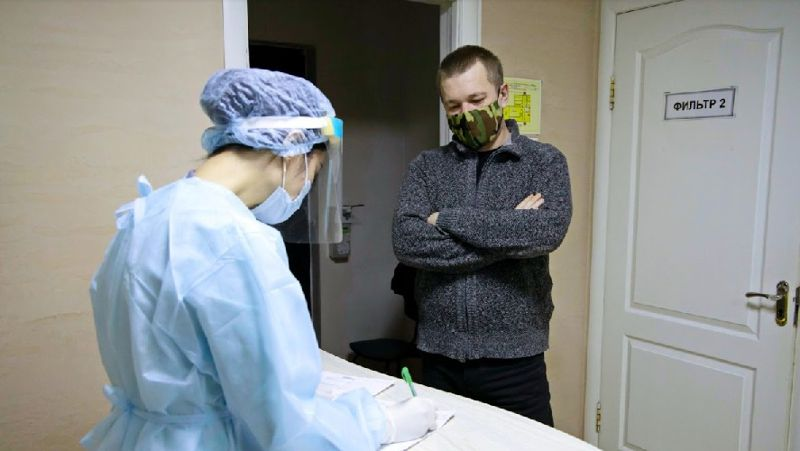

08:26, 31 июля 2022
В Казахстане незначительно
снизилось число заболевших
коронавирусом за сутки

Об эпидемиологической ситуации по коронавирусу на 30 июля
в Казахстане сообщили в МВК. Больше всего заболевших в Нур-
Султане, Алматы и Карагандинской области. В сравнении с
предыдущим днем, в стране зафиксировано заболевших
меньше на 394 человека, передает Zakon.kz.
За прошедшие сутки зарегистрировано 2713 новых случаев
заболевания коронавирусной инфекцией, из них:
- в Нур-Султане – 951,
- в Алматы – 532,
- в Шымкенте – 64,
- в Акмолинской области – 120,
- в Актюбинской области – 41,
- в Алматинской области – 44,
- Жетысуской области - 100,
- в Атырауской области – 49,
- в ВКО – 27,
- в Абайской области – 35,
- в Жамбылской области – 57,
- в ЗКО – 42,
- в Карагандинской области – 345,
- в Улытауской области – 5,
- в Костанайской области – 66,
- в Кызылординской области – 73,
- в Мангистауской области – 24,
- в Павлодарской области – 68,
- в СКО – 43,
- в Туркестанской области – 27.
Всего в стране подтверждено 1 350 180 случаев.
1887 человек выздоровели от коронавирусной
инфекции.
- в Нур-Султане – 725,
- в Алматы – 661,
- в Шымкенте – 141,
- в Акмолинской области – 0,
- в Актюбинской области – 0,
- в Алматинской области – 0,
- в Жетысуской области – 0,
- в Атырауской области – 0,
- в ВКО – 19,
- в Абайской области – 24,
- в Жамбылской области – 0,
- в ЗКО – 14,
- в Карагандинской области – 188,
- в Улытауской области – 24,
- в Костанайской области – 0,
- в Кызылординской области – 58,
- в Мангистауской области – 24,
- в Павлодарской области – 0,
- в СКО – 0,
- в Туркестанской области – 9.
Всего в стране от COVID-19 выздоровели 1 310 513 человек.